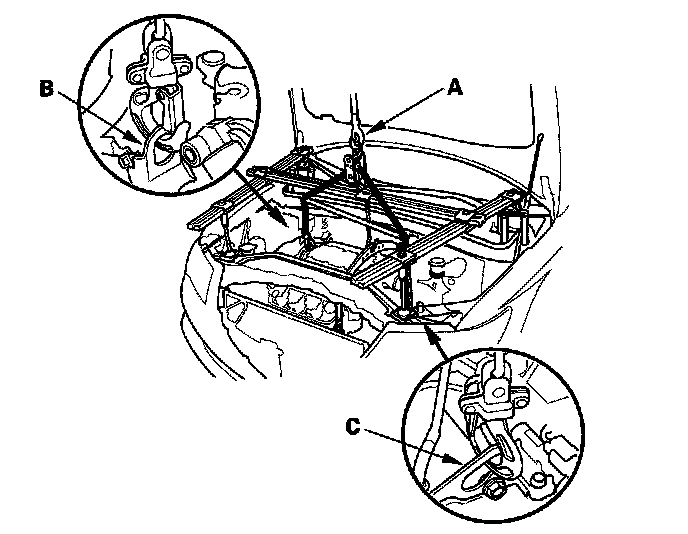

Engine Removal
Engine RemovalSpecial Tools Required
^ Front subframe adapter EQS02BMDXSBO
^ Engine support hanger A and Reds AAR-T-12566
^ Engine hanger balance bar VSB02C000019
^ Engine hanger adapter set VSB02C000031
These special tools are available through the American Honda Tool and Equipment program, 1-888-424-6857.
NOTE:
^ Use fender covers to avoid damaging painted surfaces.
^ To avoid damaging the wiring and terminals, unplug the wiring connectors carefully while holding the connector portion.
^ Mark all wiring and hoses to avoid misconnection. Also, be sure that they do not contact other wiring, hoses, or interfere with other parts.
1. Remove the support struts from the engine hood. Move the engine hood to a vertical position, then reinstall the support strut as shown.
2. Relieve the fuel pressure.
3. Drain the power steering system fluid, then plug the fluid reservoir and return hose.
4. Remove the bulkhead cover.
5. Make sure you have the anti-theft codes for the audio system and navigation system (if equipped).
6. Disconnect the negative cable from the battery first, then disconnect the positive cable.
7. Remove the battery.
8. Remove the engine cover.
9. Remove the breather pipe (A), then remove the air intake duct (B).
10. Remove the air cleaner assembly.
11. Remove the main under-hood fuse box (A), then remove the harness clamps (B).
12. Remove the harness clamps (A), then remove the battery base (B).
13. Remove the positive starter cable (A).
14. Remove the shift cable.
15. Remove the quick-connect fitting cover (A), then disconnect the fuel feed hose (B).
16. Remove the brake booster vacuum hose (A), and evaporative emission (EVAP) canister hose (B).
17. Disconnect the evaporative emission (EVAP) canister purge valve connector (C).
18. Remove the steering wheel.
19. Remove the steering joint cover (A).
20. Make a reference mark (B) across the steering joint and steering gearbox pinion shaft. Remove the steering joint bolt (C), and loosen the steering joint bolt (D), then disconnect the steering joint from the steering gearbox pinion shaft (E).
21. Remove the alternator cable (A) from the main under-hood fuse box.
22. Remove the coolant reservoir from the bracket.
23. Remove the bracket (A), then remove the powertrain control module (PCM) cover (B).
24. Remove the harness clamps (A), then disconnect the two PCM connectors (B) and engine wire harness connector (C).
25. Remove the drive belt.
26. Remove the power steering (P/S) pump inlet hose (A) and P/S pump outlet hose (B) from the P/S pump, then plug the P/S lines and P/S pump.
27. Remove the P/S hose clamp (C) from the cylinder head cover.
28. Remove the radiator cap.
29. Raise the vehicle on the lift to full height.
30. Remove the front wheels.
31. Remove the splash shield.

32. Loosen the drain plug in the radiator, and drain the engine coolant.
33. Drain the automatic transmission fluid (ATF).
34. Drain the engine oil.
35. Remove the front subframe stiffener.

36. Remove exhaust pipe A.
37. Separate the stabilizer links from the dampers.
38. Separate the tie-rod end ball joints from the knuckles.
39. With active damper system: Remove the suspension stroke sensors from the lower arms.
40. Separate the knuckles from the lower arms.
41. Remove the driveshafts. Coat all precision-finished surfaces with new engine oil. Tie plastic bags over the driveshaft ends.
42. Remove the propeller shaft from the transfer shaft flange.
43. Remove the transfer assembly.
44. Remove the P/S hose (A), then plug the line and hose.
45. Disconnect the power steering pressure switch connector.
46. Remove the transmission lower mount bolts (A) and ground cable (B).
47. Remove the rear mount bolts (A), and power steering line bracket (B).
48. Lower the vehicle on the lift.
49. Disconnect the A/C compressor clutch connector (A), then remove the A/C compressor (B) without disconnecting the A/C hoses.
50. Remove the heater hoses.
51. Remove the upper radiator hose (A) and lower radiator hose (B).
52. Remove the ATF cooler hoses from the transmission, then plug the ATF cooler hoses and lines.
53. Remove the radiator.
54. Remove the connector bracket from the front cylinder head; use the bracket bolt hole to attach the engine balancer bar front arm.
55. Remove the bracket from the rear cylinder head; use the bracket bolt hole to attach the engine balancer bar rear arm.
56. Remove the service caps (A) for the front damper flange nuts from the cowl cover (B). Position the engine hanger adapters (VSB02C000031) with the "FRONT" mark facing forward over the damper flange nuts.
57. Install the engine hanger balance bar (VSB02C000019); attach the front arm (A) to the front cylinder head with a spacer (B) and 10 x 1.25 mm bolt (C), attach the rear arm (D) to the rear cylinder head with 8 x 1.25 mm bolt (E).
58. Install the engine support hanger (AAR-T-12566) to the vehicle, and attach the hook to the slotted hole in the engine hanger balance bar. Tighten the wing nut (F) by hand to lift and support the engine/transmission.
59. Raise the vehicle on the lift to full height.
60. Disconnect the front engine mount control solenoid valve tube (A), then remove the front engine mount bolts (B).
61. With active damper system: Disconnect the front suspension stroke sensor connectors (A), then remove the harness clamps (B).
62. Make reference marks (A) on the body across the marks (B) on the edge of the front subframe (C).
63. Loosen the four bolts (A) holding the adjustable arms (B) of the front subframe adapter (EQS02BMDXSBO) to its center plate.
64. Line up the slots in the arms with the bolt holes on the corner of the jack base, then attach the front subframe adapter (A) to the jack base with the bolts (B) that came with the jack. Tighten all bolts securely.
65. Raise the jack to vehicle height, then attach the front subframe adapter to the front subframe using the subframe stiffener mounting bolts (C) and bolt holes.
66. Remove the six 12 x 1.25 mm bolts (A) securing the subframe stiffeners (B), the four subframe mounting bolts (C), and the stiffeners, then lower the front subframe (D).
67. Lower the vehicle and attach a chain hoist (A) to the engine hook (B) and transmission hook (C). Lift up on the engine/transmission until it's securely supported by the chain hoist, and remove the engine support hanger from the engine and vehicle.

68. Remove the mounting bolts from the upper half of the side engine mount bracket.
69. Check that the engine/transmission is completely free of vacuum hoses, fuel and coolant hoses, and electrical wiring.
70. Slowly lower the engine/transmission about 150 mm (6 in.). Check once again that all hoses and electrical wiring are disconnected and free from the engine/transmission, then lower it all the way.
71. Disconnect the chain hoist from the engine/transmission.
72. Raise the vehicle all the way on the lift, and remove the engine/transmission from under the vehicle.